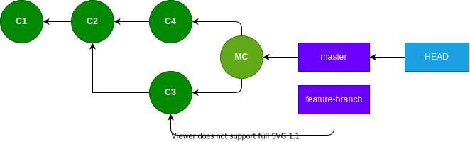
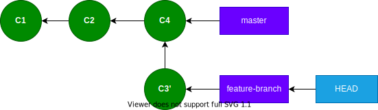

Git Internals
Part 4: Rebasing
Part 3: Merging

Overview
- What is "rebase"?
What is "rebase"?
To establish a new base for a branch.
Why rebase?
To update developer-owned branches.
Golden Rule of Rebase
Avoid rebasing public branches.
Why rebase vs. merge?
To update developer-owned branches without merge commits.
Descendent Branch

$ git rebase master ⏎
Current branch feature-branch is up to date.
Descendent Branch
$ git merge-base --is-ancestor master feature-branch && \
echo yes || echo no ⏎
yes
Commit C4 on master branch.
Divergent Branch
$ git merge-base --is-ancestor master feature-branch && \
echo yes || echo no ⏎
no
Divergent Branch
git rebase master ➜
Merging Rebased Branch

$ git merge-base --is-ancestor master feature-branch && \
echo yes || echo no ⏎
yes
Rebasing creates new commits
Merging Rebased Branch
git checkout master
git merge feature-branch
Why rebase? (continued)
Fast-forward merge is possible.
No merge commit! 🥰